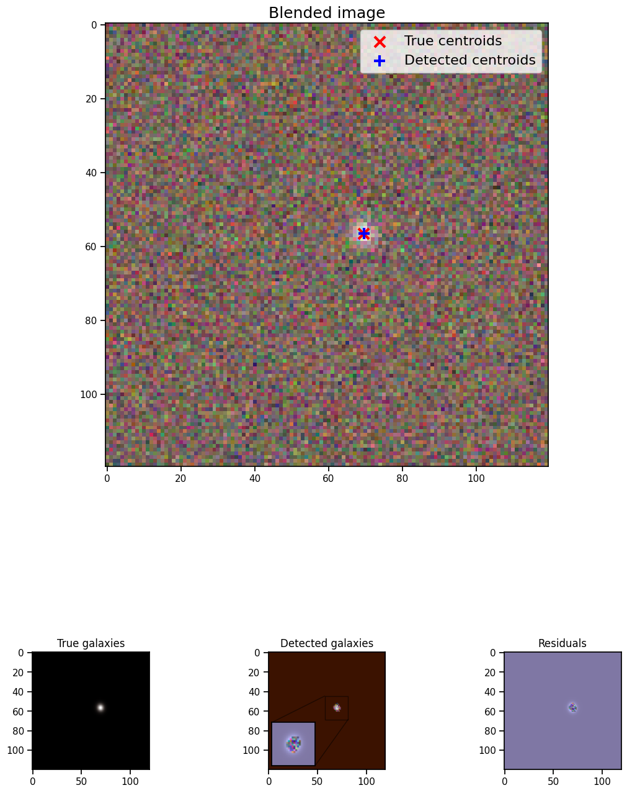
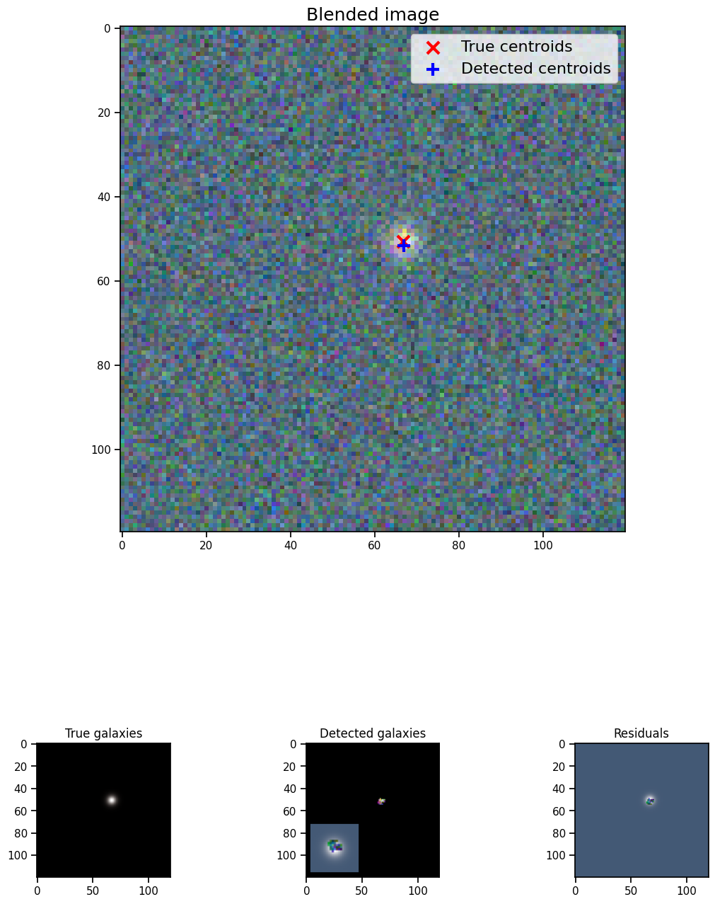
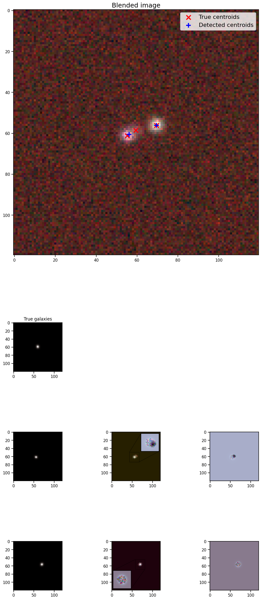
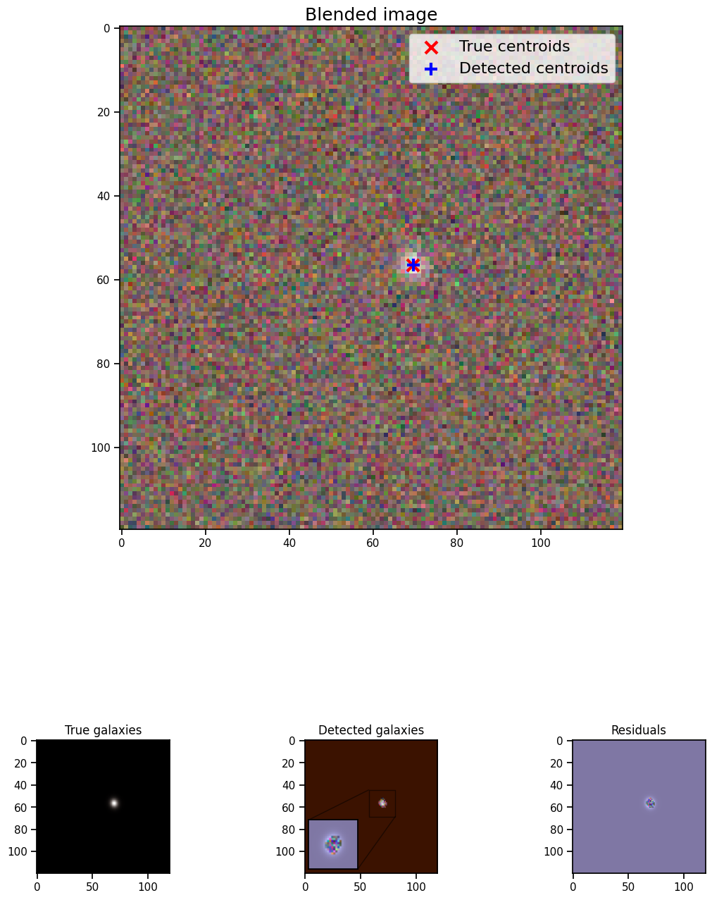
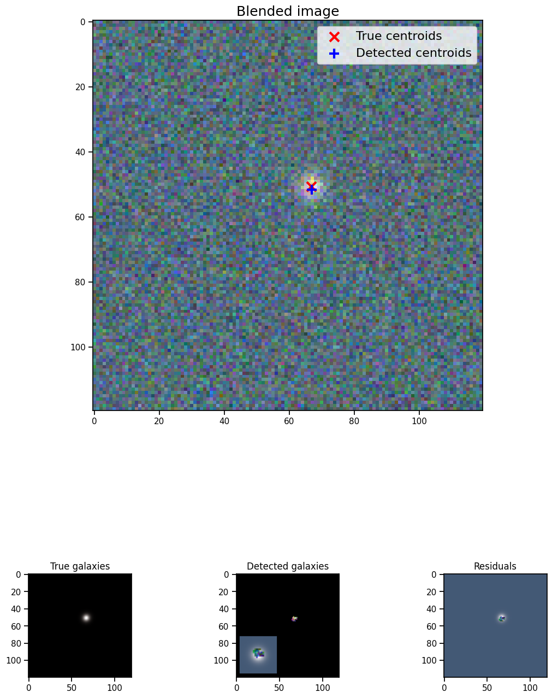
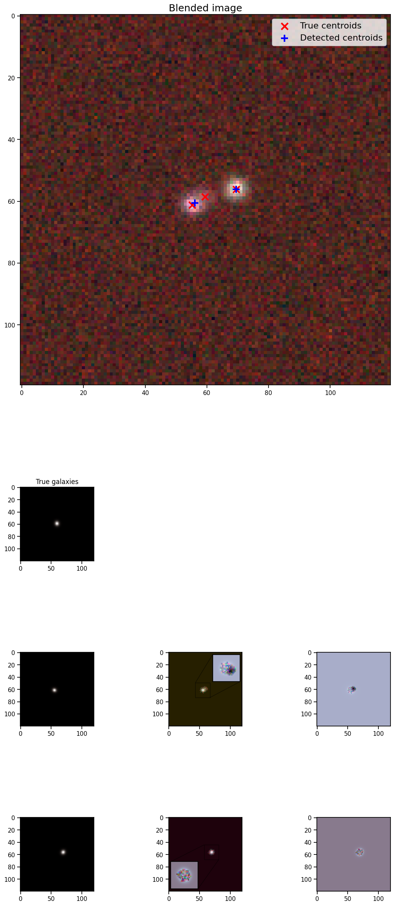

Tutorials
The following jupyter notebooks are included in the notebooks/ directory:
Setup
Importing the relevant packages
%matplotlib inline
import matplotlib.pyplot as plt
import numpy as np
import os
import sys
import btk
import btk.plot_utils
import btk.survey
import btk.draw_blends
import btk.catalog
import btk.sampling_functions
import astropy.table
Reproducibility
The following cell contains the seed use to generate reproducible random realizations of BTK output. Using the same seed in BTK for both the sampling function and draw blend generator (more info below) guarantees the galaxy images and parameters produced will be the same, even across different systems.
from btk import DEFAULT_SEED
seed = DEFAULT_SEED
Every object in BTK that needs a seed uses DEFAULT_SEED implicitly.
In this tutorial we explicitly show how this seed is passed in and which
objects needs a seed. However, we omit it in the other tutorials.
Draw some blends
We will first explore the image generation part of BTK. We need to provide 3 main elements: the catalog, a sampling function and a survey.
Catalog
BTK uses a wrapper class for the actual catalog object, to get a
standardized input for the generator. Currently BTK supports two kind of
catalogs: Catsim-like catalogs and the COSMOS catalog (as provided with
Galsim). Both have their own implementation of the Catalog class; we
will only use the Catsim one here. You can easily import the catalog
from a FITS file using the from_file method as demonstrated here
with our example catalog.
catalog_name = "../data/sample_input_catalog.fits"
catalog = btk.catalog.CatsimCatalog.from_file(catalog_name)
It is also possible to instantiate the class by giving it the catalog
directly; the from_file method is merely a shortcut.
_, ext = os.path.splitext(catalog_name)
fmt = "fits" if ext.lower() == ".fits" else "ascii.basic"
raw_catalog = astropy.table.Table.read(catalog_name, format=fmt)
catalog = btk.catalog.CatsimCatalog(raw_catalog)
When the Catalog object is created, it creates internally a table
attribute containing a modified table from the input, which will be used
in the rest of the code.
Sampling function
The sampling function is an object which is used to determine the
informations about the blends, eg which galaxies are drawn, with what
shifts, … This is achieved using the SamplingFunction class, which
is callable like a function, taking as argument the Catalog.table
and returning modified selected entries corresponding to the galaxies
being drawn. For this tutorial, we will use the default sampling
function, which can be instantiated like this:
stamp_size = 24.0 # Size of the stamp, in arcseconds
max_number = 3 # Maximum number of galaxies in a blend
max_shift = 3.0 # Maximum shift of the galaxies, in arcseconds
sampling_function = btk.sampling_functions.DefaultSampling(max_number=max_number, stamp_size=stamp_size,
maxshift=max_shift,
seed=seed) # random seed is used here!
As a reference, here is a (slightly) simplified version of the code for this sampling function.
class DefaultSampling(btk.sampling_functions.SamplingFunction):
"""Default sampling function used for producing blend tables."""
def __init__(self, max_number=2, stamp_size=24.0, maxshift=None):
"""
Args:
max_number (int): Defined in parent class
stamp_size (float): Size of the desired stamp.
maxshift (float): Magnitude of maximum value of shift. If None then it
is set as one-tenth the stamp size. (in arcseconds)
"""
super().__init__(max_number)
self.stamp_size = stamp_size
self.maxshift = maxshift if maxshift else self.stamp_size / 10.0
@property
def compatible_catalogs(self):
return "CatsimCatalog", "CosmosCatalog"
def __call__(self, table):
"""Applies default sampling to the input CatSim-like catalog and returns an
astropy table with entries corresponding to a blend centered close to postage
stamp center.
Function selects entries from input table that are brighter than 25.3 mag
in the i band. Number of objects per blend is set at a random integer
between 1 and Args.max_number. The blend table is then randomly sampled
entries from the table after selection cuts. The centers are randomly
distributed within 1/10th of the stamp size. Here even though the galaxies
are sampled from a CatSim catalog, their spatial location are not
representative of real blends.
Args:
table (astropy.table): Table containing entries corresponding to galaxies
from which to sample.
Returns:
Astropy.table with entries corresponding to one blend.
"""
number_of_objects = np.random.randint(1, self.max_number + 1)
(q,) = np.where(table["ref_mag"] <= 25.3)
blend_table = table[np.random.choice(q, size=number_of_objects)]
blend_table["ra"] = 0.0
blend_table["dec"] = 0.0
x_peak, y_peak = _get_random_center_shift(number_of_objects, self.maxshift)
blend_table["ra"] += x_peak
blend_table["dec"] += y_peak
if np.any(blend_table["ra"] > self.stamp_size / 2.0) or np.any(
blend_table["dec"] > self.stamp_size / 2.0
):
warnings.warn("Object center lies outside the stamp")
return blend_table
You can see that this function chooses random galaxies (after applying a
magnitude cut), computes random shifts for the galaxies and returns the
entries from the table, adding two columns corresponding to the shifts.
You may write more complex sampling functions if you wish to have more
control over how the galaxies are drawn; there are some other examples
in the btk.sampling_functions file. If you want to write your own,
please check the advanced-features notebook, which will show what to
do in more details.
Survey
BTK relies on the galcheat
package, which contains several galcheat.survey.Survey instances,
which store the parameters for different surveys (including LSST, HSC,
HST COSMOS…). The parameters represent physical parameters of the survey
(mirror size, pixel scale) ; each survey also contains several
galcheat.filter.Filter objects with the parameters specific to each
filter (exposure time, zeropoint). Those objects can easily be imported
in BTK using the following function and the name of the survey.
Internally, we use a btk.survey.Survey and a corresponding
btk.filter.Filter, which can be modified by the user (galcheat
objects cannot) and contain an additional PSF attribute. For this
tutorial, we will import the survey corresponding to LSST.
LSST = btk.survey.get_surveys("LSST")
Most attributes should be pretty straightforward to modify; please take a look at the API for a more substantial description of the attributes. The custom tutorial also provides descriptions of the attributes and more information on how to customize surveys.
The psf attribute deserves an additionnal explanation: it
corresponds to the PSF for each filter. It is added via the
get_surveys function : the user may provide a psf argument,
which should be a callable taking as argument a survey and a filter and
returning a galsim object. For instance :
import galsim
def custom_psf(survey,filtr):
return galsim.Kolmogorov(fwhm=filtr.psf_fwhm.to_value("arcsec"))
LSST_custom = btk.survey.get_surveys("LSST",custom_psf)
If no psf argument is provided, a default PSF taking into account
optical and atmospheric effects will be used.
A more advanced possibility is to have your custom_psf function
return a callable which in turn returns a galsim object. This callable
will be called for each batch, allowing the user to randomize the PSF
for instance :
def custom_psf(survey,filtr):
def random_psf():
return galsim.Kolmogorov(fwhm=filtr.psf_fwhm.to_value("arcsec")+np.random.uniform(-0.1,+0.1)) #Randomize the FWHM
return random_psf
LSST_custom = btk.survey.get_surveys("LSST",custom_psf)
Finally, we included the function
get_psf_from_file(psf_dir, pixel_scale) to import a PSF from a FITS
file (randomly if there are more than one file in the directory
provided). It can be used as :
def custom_psf(survey,filtr):
def random_psf():
return get_psf_from_file(psf_dir, survey.pixel_scale) #psf_dir should be replaced by the directory containing the PSF for the given survey and filter
return random_psf
LSST_custom = btk.survey.get_surveys("LSST",custom_psf)
Drawing the blends
Now that we have all the objects at our disposal, we can create the
DrawBlendsGenerator. This object is a python generator, meaning it can
be called with next(generator) to generate a new batch. It is again
declined for Catsim and COSMOS, and we will use the Catsim one here. We
suggest you refer to the documentation for information on the
additionnal parameters here.
draw_generator = btk.draw_blends.CatsimGenerator(
catalog,
sampling_function,
LSST,
batch_size=100,
stamp_size=stamp_size,
cpus=1,
add_noise="all",
seed=seed, # same random seed is used here too!
)
The results from the next call are stored in the dictionnary; the
keys are: - blend_images for the actual images (as a
(batch_size,stamp_size,stamp_size,len(survey.filters))-sized numpy array
) - isolated_images for the isolated images (as a
(batch_size,sampling_function.max_number,stamp_size,stamp_size,len(survey.filters))-sized
numpy array ) - blend_list for the blend information (as a list of
astropy tables corresponding to the output of the sampling function for
each blend) - psf for the PSF (as a list of Galsim objects) -
wcs for the World Coordinate System corresponding to the images (as
a list of astropy.wcs.WCS objects)
Please note that several surveys can be provided as a list to the
generator. In that case, each of the entry will contain a dictionnary
indexed by the surveys, which in turn contains the results described as
above (you would access it with batch['blend_images']['LSST'] for
instance.
Note: Fluxes in BTK for these images are calculated using
galcheat based on the :function:~galcheat.utilities.mag2counts
function and corresponding survey and filter parameters. Please see the
galcheat documentation for more details.
batch = next(draw_generator)
blend_images = batch['blend_images']
blend_list = batch['blend_list']
btk.plot_utils.plot_blends(blend_images[:5], blend_list[:5], limits=(30,90),norm="asinh",Q=0.1)
Generating blends for LSST survey: 0%| | 0/100 [00:00<?, ?it/s]
We can also plot the distributions in size and magnitude of the galaxies in the batch:
btk.plot_utils.plot_gal_parameters(blend_list)
Measurement
Now that we have some images, we can carry on with the measurements.
What we call measurements in BTK is one of the three main targets of
deblending: detections, segmentations and deblended images. You can use
BTK to directly carry out the measurements on the generated data. To do
this, you need to define a measure function. The measure function is a
regular function with two arguments: batch and idx. Batch is the
direct output of a DrawBlendsGenerator, and idx is the index of
the blend on which the measurements should be done. Here is an example
of what the function looks like for SEP (python implementation of Source
Extractor).
def sep_measure(batch, idx, channels_last=False, surveys=None, sigma_noise=1.5, **kwargs):
"""Return detection, segmentation and deblending information with SEP.
NOTE: If this function is used with the multiresolution feature,
measurements will be carried on the first survey, and deblended images
or segmentations will not be returned.
Args:
batch (dict): Output of DrawBlendsGenerator object's `__next__` method.
idx (int): Index number of blend scene in the batch to preform
measurement on.
sigma_noise (float): Sigma threshold for detection against noise.
Returns:
dict with the centers of sources detected by SEP detection algorithm.
"""
channel_indx = 0 if not channels_last else -1
# multiresolution
if isinstance(batch["blend_images"], dict):
if surveys is None:
raise ValueError("surveys are required in order to use the MR feature.")
survey_name = surveys[0].name
image = batch["blend_images"][survey_name][idx]
avg_image = np.mean(image, axis=channel_indx)
wcs = batch["wcs"][survey_name]
# single-survey
else:
image = batch["blend_images"][idx]
avg_image = np.mean(image, axis=channel_indx)
wcs = batch["wcs"]
stamp_size = avg_image.shape[0]
bkg = sep.Background(avg_image)
catalog, segmentation = sep.extract(
avg_image, sigma_noise, err=bkg.globalrms, segmentation_map=True
)
n_objects = len(catalog)
segmentation_exp = np.zeros((n_objects, stamp_size, stamp_size), dtype=bool)
deblended_images = np.zeros((n_objects, *image.shape), dtype=image.dtype)
for i in range(n_objects):
seg_i = segmentation == i + 1
segmentation_exp[i] = seg_i
seg_i_reshaped = np.zeros((np.min(image.shape), stamp_size, stamp_size))
for j in range(np.min(image.shape)):
seg_i_reshaped[j] = seg_i
seg_i_reshaped = np.moveaxis(seg_i_reshaped, 0, np.argmin(image.shape))
deblended_images[i] = image * seg_i_reshaped
t = astropy.table.Table()
t["ra"], t["dec"] = wcs.pixel_to_world_values(catalog["x"], catalog["y"])
# If multiresolution, return only the catalog
if isinstance(batch["blend_images"], dict):
return {"catalog": t}
else:
return {
"catalog": t,
"segmentation": segmentation_exp,
"deblended_images": deblended_images,
}
The function is not required to output all three measurements, only the
catalog with ra, dec columns containing the detections is mandatory.
Note that in the example above the batch also contains the wcs
information so it’s easy to convert between pixel and sky coordinates.
Once the measure function is defined, it can be given to a
MeasureGenerator together with the DrawBlendsGenerator from the
previous step.
meas_generator = btk.measure.MeasureGenerator(btk.measure.sep_singleband_measure,draw_generator)
The results returned by the MeasureGeneratorare both the results
from the DrawBlendsGenerator and the measures, as a dictionnary with
the same keys as the measure function output but containing a list with
the results from all the blends.
blend_results,meas_results = next(meas_generator)
Generating blends for LSST survey: 0%| | 0/100 [00:00<?, ?it/s]
You can find more on how to write your own measure function, or how to
provide several measure functions at the same time in the
advanced-features tutorial notebook; you will also find how to use
the measure_kwargs feature there.
Metrics
Finally, now that we have the measurements, we can compute metrics to
evaluate the performance of those measurements. This is done using a
MetricsGenerator, which takes a MeasureGenerator as an input, as
well as a handful of parameters. It will match the true galaxies with
the detected galaxies and compute metrics evaluating the quality of the
detection (precision, recall, F1 score), the segmentation (Intersection
over Union) and the reconstruction of the galaxy images (Mean Square
Residual, Peak Signal to Noise Ratio, Structure Similarity Index, error
on the target measures). You can find more details on those metrics on
the API
page.
import btk.metrics
import btk.plot_utils
metrics_generator = btk.metrics.MetricsGenerator(meas_generator,
target_meas={"ellipticity":btk.metrics.meas_ksb_ellipticity}, #See custom-tutorial for more details
meas_band_name="r")
blend_results,meas_results,results = next(metrics_generator)
Generating blends for LSST survey: 0%| | 0/100 [00:00<?, ?it/s]
Once we got the results, we can plot them using functions found in the
plot_utils module. While you can access all the raw data with the
keys "detection", "segmentation" and "reconstruction", you
can directly access all the segmentation and reconstruction metrics with
the "galaxy_summary" key, which contains an astropy Table with all
galaxies from all blends and the associated parameters and metrics.
We can use the plot_metrics_summary to easily plot the results from
the metrics.
btk.plot_utils.plot_metrics_summary(results,interactive=True, target_meas_keys=['ellipticity0'], target_meas_limits=[(-1, 1)])
HBox(children=(VBox(children=(HTML(value='<em>Measure functions</em>'), VBox(children=(Checkbox(value=False, d…
We can also use the matches from the metrics to plot the isolated galaxy images along with the matching deblended galaxies:
btk.plot_utils.plot_with_deblended(
blend_results["blend_images"],
blend_results["isolated_images"],
blend_results["blend_list"],
meas_results["catalog"]["sep_singleband_measure"],
meas_results["deblended_images"]["sep_singleband_measure"],
results["matches"]["sep_singleband_measure"],
indexes=list(range(5)),
band_indices=[1, 2, 3]
)
 





Saving the results
You may wish to save the results of a run of BTK for later use ; or use BTK from the command line (cf documentation) and retrieve the results in a python file later. Here we will show how to save and load the results.
Saving the results can be automatically achieved by providing the save_path argument to the three generators. It can either be a string or use the os.path API. The folder designated by the path must already exist.
import tempfile
save_path = tempfile.mkdtemp() # Temporary directory. You can specify your own with a usual "/path/to/folder" syntax
draw_generator = btk.draw_blends.CatsimGenerator(
catalog,
sampling_function,
LSST,
batch_size=100,
stamp_size=stamp_size,
cpus=1,
add_noise='all',
save_path=save_path
)
meas_generator = btk.measure.MeasureGenerator(btk.measure.sep_singleband_measure,draw_generator,save_path=save_path)
metrics_generator = btk.metrics.MetricsGenerator(meas_generator,
target_meas={"ellipticity":btk.metrics.meas_ksb_ellipticity},
meas_band_name="r",
save_path=save_path)
blend_results,meas_results,results = next(metrics_generator)
Generating blends for LSST survey: 0%| | 0/100 [00:00<?, ?it/s]
To load the results, you can use the load_all_results function ; you
need to provide it with the name of the surveys and of the measure
functions you used when saving the images, as well as the size of the
batch.
blend_results,meas_results,results = btk.utils.load_all_results(save_path,["LSST"],["sep_singleband_measure"],n_batch=100)
Using COSMOS galaxies
In this section we will demonstrate how to generate blends using galaxies from the COSMOS catalog. You will find that generating images with COSMOS is very similar to generating images with Catsim.
Let’s start with the catalog and sampling function. We use a small sample of the real COSMOS catalog that is already in the BTK repository, but you can fill in a different path if you have the complete data set on your computer. It can be downloaded from at this page.
COSMOS_CATALOG_PATHS = [
"../data/cosmos/real_galaxy_catalog_23.5_example.fits",
"../data/cosmos/real_galaxy_catalog_23.5_example_fits.fits",
]
stamp_size = 24.0
batch_size = 8
catalog = btk.catalog.CosmosCatalog.from_file(COSMOS_CATALOG_PATHS)
sampling_function = btk.sampling_functions.DefaultSampling(stamp_size=stamp_size)
We can now create the corresponding instance of DrawBlendsGenerator. There is an important caveat here: as in the other tutorial, we use the LSST survey. However, the COSMOS data set only contains images and magnitudes from the f814w band; thus, when simulating images, the same magnitude is used to compute the galaxy fluxes across all bands. The section that follows explains how to get around this issue.
draw_generator = btk.draw_blends.CosmosGenerator(
catalog,
sampling_function,
btk.survey.get_surveys("LSST"),
batch_size=batch_size,
stamp_size=stamp_size,
cpus=1,
add_noise="all",
verbose=False,
)
batch = next(draw_generator)
blend_images = batch['blend_images']
blend_list = batch['blend_list']
btk.plot_utils.plot_blends(blend_images, blend_list, limits=(30,90))
In order to circumvent the aforementioned caveat, BTK offers the possibility to retrieve different magnitudes for each band. In order to use this feature, the corresponding magnitudes can be specified in any of the two provided COSMOS catalogs using the following column name format: "sn_fn", where sn and fn are the Survey and Filter names, respectively, as written in the Survey and Filter named tuple classes. BTK will automatically look for those columns and use the information when available to compute galaxy fluxes.
To better understand how to provided custom COSMOS data to BTK, let’s review in more detail the COSMOS dataset and its implementation in BTK.
As seen above, the BTK CosmosCatalog is instantiated from two COSMOS catalog files. The first one contains all the necessary information to draw a real galaxy (such as the paths to the galaxy and PSF stamps or the noise characteristics). The second one contains information about parameters fits to the galaxies (such as sersic parameters or bulge-to-disk ratios). You can refer to the galsim documentation for more details. You can refer to the COSMOS_23.5_training_sample_readme.txt and COSMOS_25.2_training_sample_readme.txt README files coming with the COSMOS data set download to check the column details of each catalog.
In BTK, both the ‘parametric’ and ‘real’ mode to draw galaxies can be used. When drawing ‘real’ galaxies, most of the information of the second catalog is not necessary, but the file must be provided to instantiate the CosmosCatalog and galsim.COSMOSCatalog objects. In practice, BTK uses the flux_radius column to compute an estimate of the size of each source used for performance evaluation measures, so the second catalog should contain at least this column.
Custom COSMOS catalogs to draw ‘real’ galaxies should thus satisfy the following conditions:
The second catalog should contain at least the
flux_radiuscolumn,The first catalog should contain the same columns than the official COSMOS data release
The galaxy and PSF stamps should be provided and accessible.
(optional) One of the two catalogs can contain multiband magnitudes using the format described above.
SCARLET implementation
We provide an implementation of the measure function for SCARLET , a deblending algorithm based on matrix factorization. The code for SCARLET can be found in this repo. You can install scarlet and its dependencies directly along BTK by running
pip install btk[scarlet]
pip install git+https://github.com/pmelchior/scarlet
This will install the latest version of SCARLET in github and NOT in pip (which is outdated).
You can find the SCARLET measure function implementation here.
Advanced features
You can find more details on specific features of BTK in these two tutorials: the first one explains how to write your own sampling function, survey or measure function (the measure function may be particularily important for users who want to test their own algorithm. The second one details how to use the multiresolution feature, as well as how to deal with multiple measure functions and how to pass them several different arguments using the “measure_kwargs”.